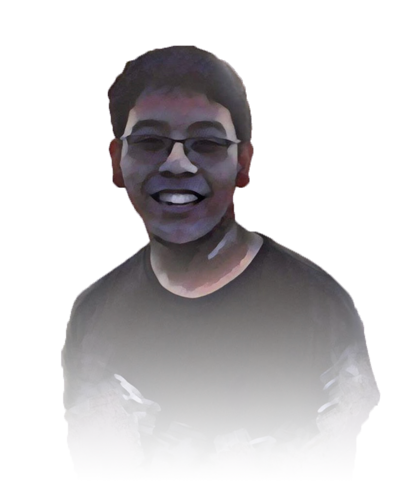
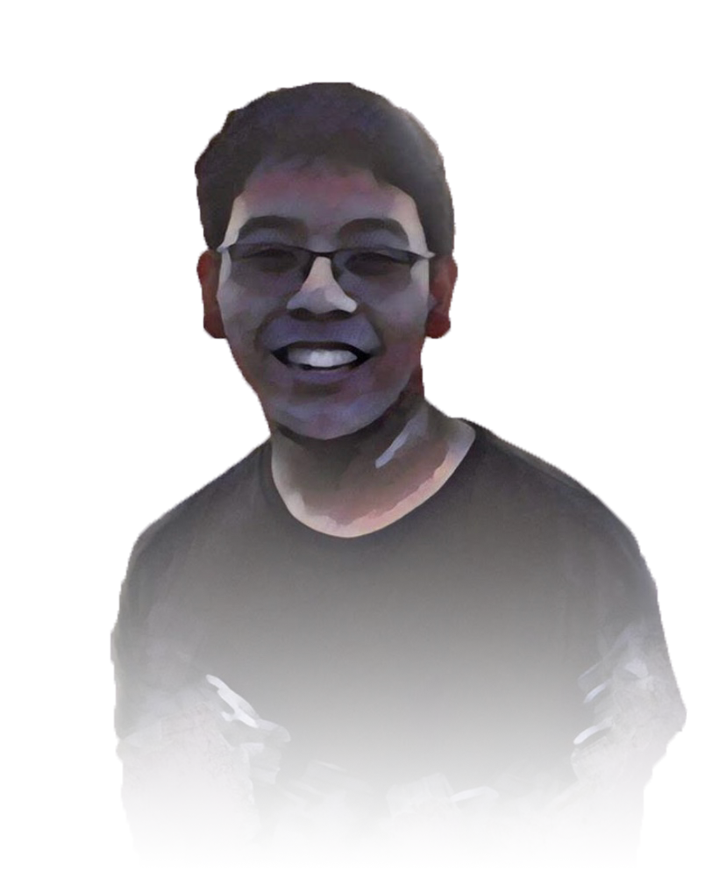
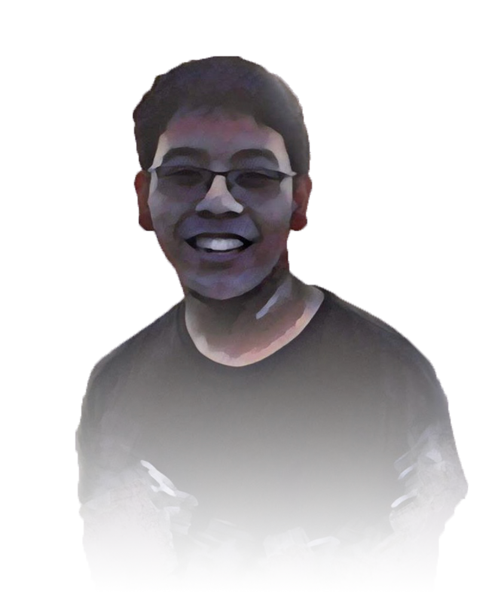
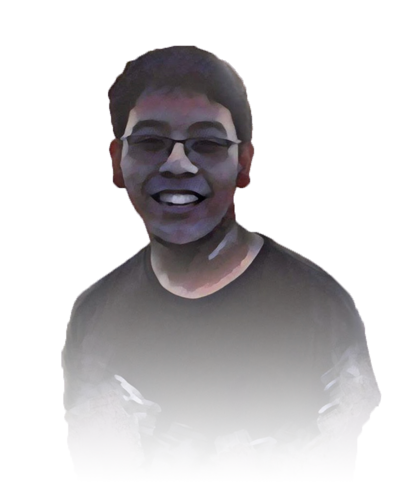

Okay, let's be honest. I'm a mess. I mean, what can you expect from a second year college student? I’ve barely dabbled myself in the real world yet. Whenever an adult asks me “Hey, how’s college?”, for some reason I just feel pressured to tell them that everything’s going smoothly so far (it hasn’t) and I have a plan and everything for my future and whatever (I don’t). Look, if you want to see me try to sell myself as much as possible, go see my resume page. But if you want to know who I really am, here are the basics:
Speaking of instruments, check out my music page as I’m just as passionate in music as I am in coding. Also, give my blog a peek to see what I have to say about…things. I am far from a good writer, and quite a nervous one, so just make sure to take everything with a grain of salt.
What do you want to talk about? Code? Music? Corgis? Just want to say hi? Send me an email!